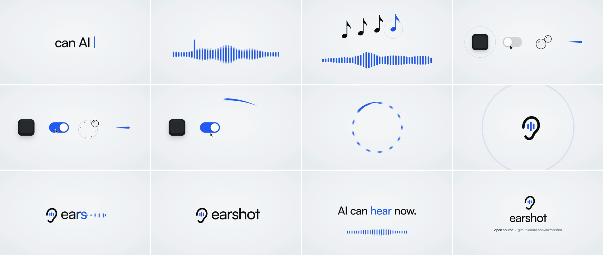

Threads｜earshot v0.3：為 AI 影片與程式代理補上可程式化音效與同步檢查

一句話摘要
earshot 想解決「AI agent 能寫出影片或互動作品，卻聽不見自己做出來的聲音」這件事：它將聲音轉成可描述、可比對、可量測的證據，也能以程式生成、檢查並安排影片音效。
Threads 可見內容
苦夫（@kufutw）提到 earshot v0.3 新增 201 款程式生成音效，並可為整部影片建立聲音配置。貼文本身未交代模型、配額、安裝成本或同步精度，因此以下以專案 GitHub README 與 changelog 為準。
官方專案查核：v0.3 實際帶來什麼
GitHub 專案將 earshot 描述為可在本機 CPU 執行的開源工具，提供 CLI、Python API 和 MCP server；它可做聲音描述、文字與聲音匹配、長音檔事件搜尋、時間軸分析、聲音／影片同步檢查與影片音訊評析。
2026-10-19 發布的 v0.3.0，新增「影片音效引擎」方向：
- `earshot sfx list / render / check`：從內建音效庫列出、渲染與量測檢查一個音效；可對部分聲音調整時長、音量峰值位置或音高。
- `earshot kit init / render / check / audition`：建立整部影片的音效角色表，渲染可快取 take，並輸出包含 onset、peak、end、loudness 等量測資料的 lock 檔。
- 音效庫：README 記載 201 個聲音，包含程式合成的 forge v2 音效、kalimba 音色與由 CC0 錄音擬合的部分聲音；其音效庫渲染不需要模型與網路。
- 可接 agent：除了 CLI 與 Python API，專案列出 MCP 工具，例如 `sfx_list`、`sfx_render` 與 `kit_render`，適合接到能操作程式碼與媒體管線的 coding agent。
什麼情境值得試
- **課程／產品短片的動態點綴**：用 whoosh、hit、click、文字跳出音等角色，建立一致的音效語彙，而不必每次人工在素材庫翻找。
- **程式化影片工作流**：若影片由 HTML/CSS/JS、Remotion 或 agent 產生，可把畫面 cue 與音效配置一起版本控制；lock 檔讓後續重製有可追溯的同步依據。
- **Agent 做初步音訊 QA**：先用 timeline、sheet、critique 或量測結果找出過晚的 hit、過高峰值、剪斷的尾音等問題，再由人耳決定是否採用。
不該過度解讀的地方
- 「精準同步」是工具的設計目標與量測流程，不等於任何影片、任何自動化管線都會自然達到專業音畫效果；剪輯節奏、觀眾感受與混音仍需人耳驗收。
- README 中的真實感、盲測、模型分數與效果比較多為作者的測試／自述，且有小樣本限制；不應把它當作獨立第三方評測。
- 專案雖標示 CPU-only，但完整分析命令可能需載入模型；README 提及首次模型下載約 1.1 GB，且單次 CLI 呼叫載入可能約 20–40 秒。對頻繁 agent 呼叫，MCP server 或單一 Python 程序通常更合理。
- 若拿既有錄音進行 `fit` 或商用發布，必須保留與確認原始音檔授權；即使產出是程式配方，也不會自動消除衍生素材的權利義務。
最小可用試法
先只挑一支 10–20 秒、已完成無聲剪輯的短片：以 `kit init` 建一組簡潔 preset，針對文字、轉場與收尾各放一個 cue；渲染後用 `kit check`、`timeline` 或 `sheet` 看實際量測，再人工聽一次。音效越少越容易判斷是否真正改善節奏，避免一開始就把全片塞滿效果。
來源
- Threads：<https://www.threads.com/@kufutw/post/Des1q9Rjj0Q>
- 官方 GitHub README：<https://github.com/Leonxlnx/earshot>
- v0.3.0 changelog：<https://github.com/Leonxlnx/earshot/blob/main/CHANGELOG.md>